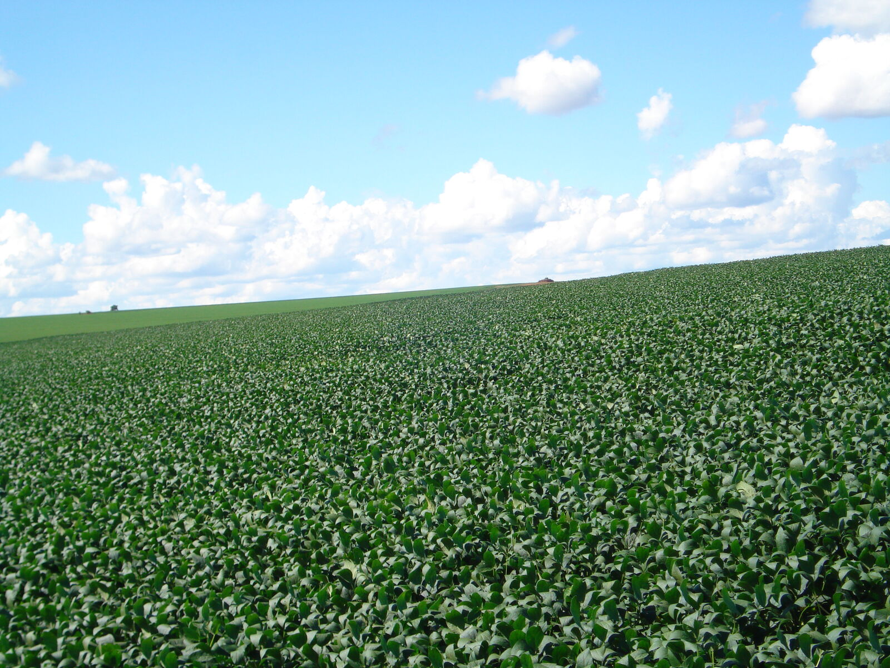

Administração Rural
Finanças no Agronegócio
Controle de custos, fluxo de caixa e crédito rural na gestão da propriedade rural.
Ver apresentação →

Agronomia · Silvicultura
Manejo Sustentável da Amazônia
Propostas de manejo e exploração sustentável da Amazônia brasileira: produção e conservação.
Ver apresentação →